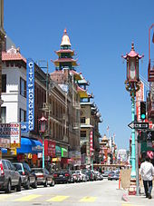
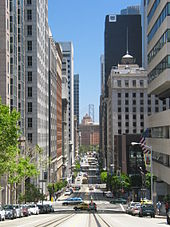
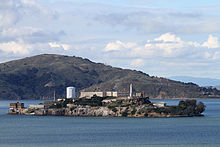

San Francisco

San Francisco, officially the City and County of San Francisco, is a cultural, commercial, and financial center of Northern California. San Francisco is the 16th most populous city in the United States, and the fourth most populous in California, with 881,549 residents as of 2019. It covers an area of about 46.89 square miles (121.4 km2), mostly at the north end of the San Francisco Peninsula in the San Francisco Bay Area, making it the second most densely populated large U.S. city, and the fifth most densely populated U.S. county, behind only four of the five New York City boroughs. San Francisco is part of the 12th-largest metropolitan statistical area in the United States by population, with 4.7 million people, and the fourth-largest by economic output, with GDP of $592 billion in 2019. With San Jose, it forms the fifth most populous combined statistical area in the United States, with 9.67 million residents as of 2019. Colloquial nicknames for San Francisco include The City, SF, Frisco and San Fran.
The earliest archaeological evidence of human habitation of the territory of the city of San Francisco dates to 3000 BC. The Yelamu group of the Ohlone people resided in a few small villages when an overland Spanish exploration party, led by Don Gaspar de Portolá, arrived on November 2, 1769, the first documented European visit to San Francisco Bay. The first maritime presence occurred on August 5, 1775, when San Carlos—commanded by Juan Manuel de Ayala—became the first ship to anchor in the bay. The following year, on March 28, 1776, the Spanish established the Presidio of San Francisco, followed by a mission, Mission San Francisco de AsÃs (Mission Dolores), established by the Spanish explorer Juan Bautista de Anza. Upon independence from Spain in 1821, the area became part of Mexico. Under Mexican rule, the mission system gradually ended, and its lands became privatized. In 1835, William Richardson, a naturalized Mexican citizen of English birth, erected the first independent homestead,[44] near a boat anchorage around what is today Portsmouth Square. Together with Alcalde Francisco de Haro, he laid out a street plan for the expanded settlement, and the town, named Yerba Buena, began to attract American settlers.
Geography
San Francisco is located on the West Coast of the United States at the north end of the San Francisco Peninsula and includes significant stretches of the Pacific Ocean and San Francisco Bay within its boundaries. Several picturesque islands—Alcatraz, Treasure Island and the adjacent Yerba Buena Island, and small portions of Alameda Island, Red Rock Island, and Angel Island—are part of the city. Also included are the uninhabited Farallon Islands, 27 miles (43 km) offshore in the Pacific Ocean. The mainland within the city limits roughly forms a "seven-by-seven-mile square", a common local colloquialism referring to the city's shape, though its total area, including water, is nearly 232 square miles (600 km2).
There are more than 50 hills within the city limits. Some neighborhoods are named after the hill on which they are situated, including Nob Hill, Potrero Hill, and Russian Hill. Near the geographic center of the city, southwest of the downtown area, are a series of less densely populated hills. Twin Peaks, a pair of hills forming one of the city's highest points, forms an overlook spot. San Francisco's tallest hill, Mount Davidson, is 928 feet (283 m) high and is capped with a 103-foot (31 m) tall cross built in 1934. Dominating this area is Sutro Tower, a large red and white radio and television transmission tower.
Neighborhoods
The historic center of San Francisco is the northeast quadrant of the city anchored by Market Street and the waterfront. It is here that the Financial District is centered, with Union Square, the principal shopping and hotel district, and the Tenderloin nearby. Cable cars carry riders up steep inclines to the summit of Nob Hill, once the home of the city's business tycoons, and down to the waterfront tourist attractions of Fisherman's Wharf, and Pier 39, where many restaurants feature Dungeness crab from a still-active fishing industry. Also in this quadrant are Russian Hill, a residential neighborhood with the famously crooked Lombard Street; North Beach, the city's Little Italy and the former center of the Beat Generation; and Telegraph Hill, which features Coit Tower. Abutting Russian Hill and North Beach is San Francisco's Chinatown, the oldest Chinatown in North America. The South of Market, which was once San Francisco's industrial core, has seen significant redevelopment following the construction of Oracle Park and an infusion of startup companies. New skyscrapers, live-work lofts, and condominiums dot the area. Further development is taking place just to the south in Mission Bay area, a former railroad yard, which now has a second campus of the University of California, San Francisco and Chase Center, which opened in 2019 as the new home of the Golden State Warriors.
West of downtown, across Van Ness Avenue, lies the large Western Addition neighborhood, which became established with a large African American population after World War II. The Western Addition is usually divided into smaller neighborhoods including Hayes Valley, the Fillmore, and Japantown, which was once the largest Japantown in North America but suffered when its Japanese American residents were forcibly removed and interned during World War II. The Western Addition survived the 1906 earthquake with its Victorians largely intact, including the famous "Painted Ladies", standing alongside Alamo Square. To the south, near the geographic center of the city is Haight-Ashbury, famously associated with 1960s hippie culture.[citation needed] The Haight is now home to some expensive boutiques[96] and a few controversial chain stores, although it still retains some bohemian character.
Economy
According to academic Rob Wilson, San Francisco is a global city, a status that pre-dated the city's popularity during the California Gold Rush.[160] Such cities are characterized by their ethnic clustering, network of international connectivity, and convergence of technological innovation.[ Global cities, such as San Francisco, are considered to be complex and require a high level of talent as well as large masses of low wage workers. A divide is created within the city of ethnic, typically lower-class neighborhoods, and expensive ones with newly developed buildings. This in turn creates a population of highly educated, white-collar individuals as well as blue-collar workers, many of whom are immigrants, and who both are drawn to the increasing number of opportunities available. Competition for these opportunities pushes growth and adaptation in world centers.
San Francisco has a diversified service economy, with employment spread across a wide range of professional services, including financial services, tourism, and (increasingly) high technology. In 2016, approximately 27% of workers were employed in professional business services; 14% in leisure and hospitality; 13% in government services; 12% in education and health care; 11% in trade, transportation, and utilities; and 8% in financial activities. In 2019, GDP in the five-county San Francisco metropolitan area grew 3.8% in real terms to $592 billion. Additionally, in 2019 the 14-county San Jose–San Francisco–Oakland combined statistical area had a GDP of $1.086 trillion, ranking 3rd among CSAs, and ahead of all but 16 countries. As of 2019, San Francisco County was the 7th highest-income county in the United States (among 3,142), with a per capita personal income of $139,405. Marin County, directly to the north over the Golden Gate Bridge, and San Mateo County, directly to the south on the Peninsula, were the 6th and 9th highest-income counties respectively.